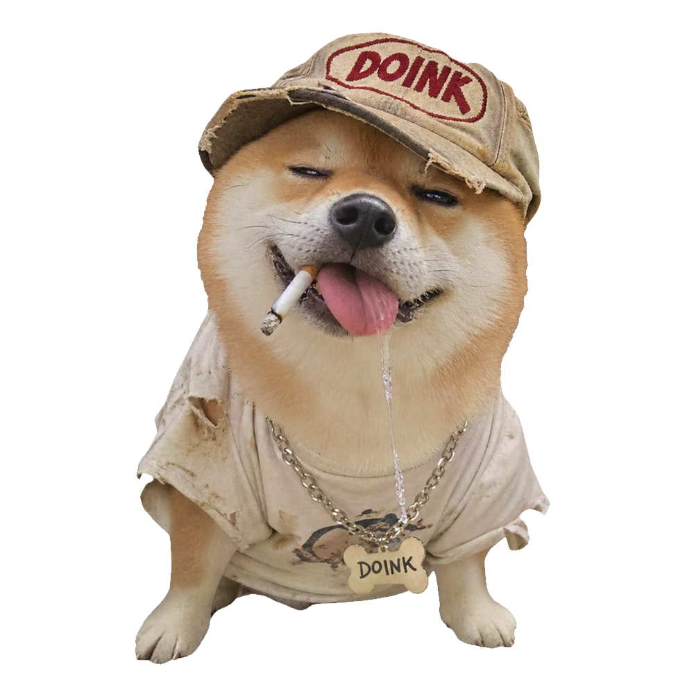

DOINK
PERSONAL COMPUTER
⛶
DOINK
$DOINK
▰
My DOINK
Evidence
▶
DOINK TV
≡
doink.txt
SOCIALS
▥
Recycle Bin
▰ My DOINK
_
□
×
File
View
DOINK
Address
C:\DOINK

doink.png
MY COMPUTER
DOINK
®
$DOINK
Files
07
Brain
Not found
Open evidence
▶ Watch
📁 Evidence
_
□
×
File
View
Tools
Address
C:\DOINK\Evidence
📁 SOCIALS
_
□
×
File
View
Tools
Address
C:\DOINK\SOCIALS
𝕏
twitter.com
pump.fun
Image viewer
_
□
×
‹
›
Save image
▶ DOINK TV
_
□
×
File View Play
01 doink.mp4
02 doink2.mp4
▤ doink.txt — Notepad
_
□
×
File
Edit
Format
DOINK $DOINK
Recycle Bin
×
×
Brain not found.
OK
DOINK
▰ My DOINK
📁 Evidence
▶ DOINK TV
▤ Notepad